<title>Sage &amp; Oak · Lemgrubenstrasse 8</title>
<link rel="preconnect" href="https://fonts.googleapis.com">
<link rel="stylesheet" href="https://fonts.googleapis.com/css2?family=Newsreader:ital,opsz,wght@0,6..72,400;0,6..72,500;1,6..72,400&family=Karla:wght@400;500;600&family=Caveat:wght@500&family=IBM+Plex+Mono:wght@400&display=swap">
<style>
/* Layout: one paper moodboard sheet: title band with palette, plan beside the overview render, then one spread per zone.
   Single deliberate light "paper" look in every theme. */
:root {
  --paper: #f2efe7; --card: #fbf9f4; --ink: #2f3133; --muted: #6b6a63; --rule: #d9d3c6;
  --sage: #7c8b74; --sage-l: #b9c3ad; --oat: #e8dfd0; --oak: #c9a26b; --taupe: #8b7765; --taupe-l: #b7a898;
  --lake: #3e7c82; --steel: #c8ccd0; --lawn: #cfdcc0; --paving: #e3ded3; --kerb: #bdb7aa; --floor: #f8f5ee;
  --fixture: #dedad2; --piece: #fffdf8;
  --f-display: "Newsreader", Georgia, "Times New Roman", serif;
  --f-body: "Karla", "Helvetica Neue", Arial, sans-serif;
  --f-hand: "Caveat", "Bradley Hand", cursive;
  --f-mono: "IBM Plex Mono", ui-monospace, Menlo, monospace;
  color-scheme: light;
}
body { background: var(--paper); color: var(--ink); font-family: var(--f-body); font-size: 15px; line-height: 1.55; }
.sheet { max-width: 1180px; margin: 0 auto; padding-inline: 20px; padding-block: 28px 56px; display: grid; gap: 44px; }
h1, h2, h3 { font-family: var(--f-display); font-weight: 400; margin: 0; text-wrap: balance; }
h1 { font-size: clamp(34px, 5vw, 56px); line-height: 1.05; letter-spacing: -0.01em; }
h1 em { color: var(--sage); }
h2 { font-size: 26px; }
h3 { font-size: 24px; }
.eyebrow { font-size: 12px; letter-spacing: 0.14em; text-transform: uppercase; color: var(--muted); }
header.top { display: grid; grid-template-columns: minmax(0, 1.4fr) minmax(0, 1fr); gap: 28px; align-items: end; border-bottom: 1px solid var(--rule); padding-bottom: 28px; }
.lede { max-width: 60ch; margin: 12px 0 0; color: var(--ink); }
.palette { display: grid; grid-template-columns: repeat(4, minmax(0, 1fr)); gap: 14px 10px; }
.sw { display: grid; gap: 4px; justify-items: start; font-size: 12.5px; }
.sw i { width: 52px; height: 52px; border-radius: 50%; display: block; box-shadow: inset 0 0 0 1px rgba(0,0,0,.06); }
.sw b { font-weight: 600; } .sw code { font-family: var(--f-mono); font-size: 11px; color: var(--muted); }
.note { font-family: var(--f-hand); font-size: 26px; line-height: 1.15; color: var(--taupe); transform: rotate(-3deg); margin: 6px 0 0; }
.board { display: grid; grid-template-columns: minmax(0, 1fr) minmax(0, 1.25fr); gap: 20px; align-items: start; }
.panel { background: var(--card); border: 1px solid var(--rule); padding: 14px; display: grid; gap: 8px; }
.panel svg { width: 100%; height: auto; display: block; }
.panel img { width: 100%; display: block; }
.cap { font-size: 12.5px; color: var(--muted); margin: 0; }
svg .lbl { font: 600 11px var(--f-body); fill: var(--ink); text-anchor: middle; paint-order: stroke; stroke: var(--floor); stroke-width: 3px; }
svg .lbl.small { font-weight: 500; text-anchor: start; stroke: none; }
.materials { display: grid; grid-template-columns: repeat(6, minmax(0, 1fr)); gap: 10px; }
.mat { aspect-ratio: 1 / 1; max-width: 100%; display: flex; align-items: end; padding: 8px; font-size: 12px; font-weight: 600; color: var(--ink); border: 1px solid var(--rule); }
.mat span { background: var(--card); padding: 1px 6px; }
.m-oak { background: repeating-linear-gradient(92deg, #c9a26b 0 6px, #bf955c 6px 9px, #d3ad79 9px 15px); }
.m-linen { background: repeating-linear-gradient(0deg, #e8dfd0 0 2px, #e1d6c4 2px 3px), #e8dfd0; background-blend-mode: multiply; }
.m-wool { background: radial-gradient(circle at 30% 30%, #8a9a80 0 2px, transparent 3px) 0 0 / 9px 9px, #7c8b74; }
.m-rattan { background: repeating-linear-gradient(45deg, #b08a5a 0 5px, #c7a376 5px 10px), repeating-linear-gradient(-45deg, transparent 0 5px, rgba(0,0,0,.08) 5px 10px); }
.m-water { background: linear-gradient(180deg, #8fc3c4, #3e7c82); }
.m-steel { background: linear-gradient(115deg, #e6e8ea, #b9bec3 45%, #eef0f1 55%, #aeb3b8); }
.zones { display: grid; gap: 44px; }
.zone { display: grid; grid-template-columns: minmax(0, 1.25fr) minmax(0, 1fr); gap: 26px; align-items: start; border-top: 1px solid var(--rule); padding-top: 26px; }
.zone:nth-child(even) .pics { order: 2; }
.pics { display: grid; gap: 10px; grid-template-columns: minmax(0, 1fr) minmax(0, 1fr); }
.shot { margin: 0; grid-column: 1 / -1; background: var(--card); border: 1px solid var(--rule); padding: 8px; }
.shot.small { grid-column: auto / span 2; }
.shot img { width: 100%; display: block; }
.shot figcaption { font-size: 12px; color: var(--muted); padding-top: 6px; letter-spacing: 0.06em; text-transform: uppercase; }
.txt { display: grid; gap: 12px; min-width: 0; }
.txt p { margin: 0; max-width: 62ch; }
ul.ideas { list-style: none; margin: 0; padding: 0; display: grid; gap: 6px; }
ul.ideas li { padding-left: 24px; position: relative; }
ul.ideas li::before { content: "✓"; position: absolute; left: 0; color: var(--sage); font-weight: 600; }
ul.pieces { list-style: none; margin: 0; padding: 0; border-top: 1px solid var(--rule); }
ul.pieces li { display: grid; grid-template-columns: minmax(0, auto) minmax(0, 1fr) auto; gap: 10px; padding: 6px 0; border-bottom: 1px solid var(--rule); font-size: 13.5px; align-items: baseline; }
ul.pieces span { font-weight: 600; } ul.pieces em { font-style: normal; color: var(--muted); overflow: hidden; text-overflow: ellipsis; white-space: nowrap; }
ul.pieces code { font-family: var(--f-mono); font-size: 11.5px; color: var(--muted); font-variant-numeric: tabular-nums; }
footer { border-top: 1px solid var(--rule); padding-top: 22px; display: grid; gap: 8px; color: var(--muted); font-size: 13.5px; }
footer a { color: var(--ink); }
a:focus-visible { outline: 2px solid var(--sage); outline-offset: 2px; }
@media (max-width: 860px) {
  header.top, .board, .zone { grid-template-columns: 1fr; }
  .zone:nth-child(even) .pics { order: 0; }
  .materials { grid-template-columns: repeat(3, minmax(0, 1fr)); }
  .palette { grid-template-columns: repeat(4, minmax(0, 1fr)); }
}
</style>

<main class="sheet">
  <header class="top">
    <div>
      <div class="eyebrow">Lemgrubenstrasse 8 · Erdgeschoss · L08.02 · 94 m² + 76 m² garden</div>
      <h1>Sage &amp; Oak, <em>with water and books</em></h1>
      <p class="lede">A calm, natural home built on what is already there: the grey VIMLE, the oak dining table, the pine bed and the
        sage work room. Oak and linen everywhere, sage as the one colour, charcoal for lines and lamps, and a lake-green
        aquarium at the heart of a new library. Outside, a kitchen garden in two raised beds and a beer garden with its own brewing corner.</p>
      <p class="note">read, grow, brew, repeat ♡</p>
    </div>
    <div class="palette" aria-label="Colour palette">
      <div class="sw"><i style="background:var(--sage)"></i><b>Sage</b><code>#7C8B74</code></div>
      <div class="sw"><i style="background:var(--oat)"></i><b>Oat</b><code>#E8DFD0</code></div>
      <div class="sw"><i style="background:var(--oak)"></i><b>Oak</b><code>#C9A26B</code></div>
      <div class="sw"><i style="background:var(--taupe)"></i><b>Taupe</b><code>#8B7765</code></div>
      <div class="sw"><i style="background:var(--ink)"></i><b>Charcoal</b><code>#2F3133</code></div>
      <div class="sw"><i style="background:var(--lake)"></i><b>Lake</b><code>#3E7C82</code></div>
      <div class="sw"><i style="background:#f1f0ec"></i><b>Chalk</b><code>#F1F0EC</code></div>
      <div class="sw"><i style="background:#b08a5a"></i><b>Rattan</b><code>#B08A5A</code></div>
    </div>
  </header>

  <div class="board">
    <div class="panel">
      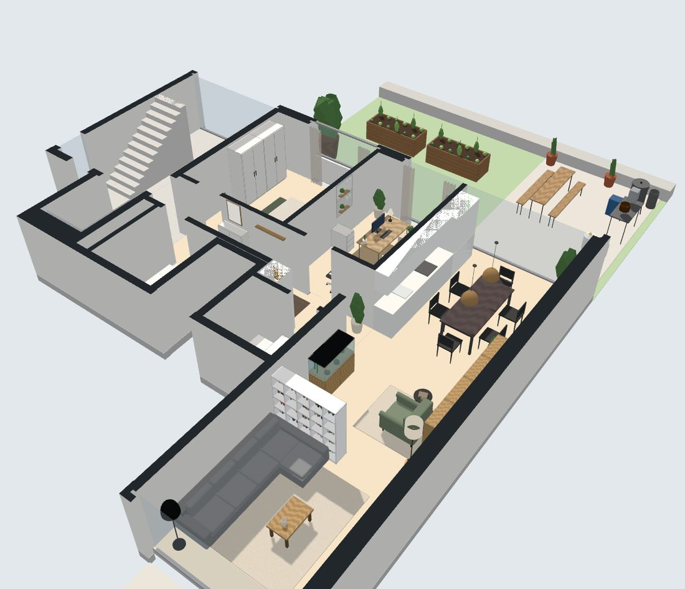
      <p class="cap">The whole flat from the south-east, cut at 2.1 m. 104 pieces, all at their real sizes.</p>
    </div>
    <div class="panel">
      <svg viewBox="0 0 924 513" role="img" aria-label="Floor plan with every piece of furniture at its real size"><path d="M157.5,294.8 L157.5,444.2 L21.4,444.2 L21.4,294.8 Z" fill="var(--paving)"/><path d="M890.9,21.5 L890.9,452.0 L653.6,452.0 L653.6,21.5 Z" fill="var(--lawn)"/><path d="M880.0,289.4 L880.0,443.7 L653.6,443.7 L653.6,289.4 Z" fill="var(--paving)"/><path d="M890.9,21.5 L890.9,452.0 L870.5,452.0 L870.5,21.5 Z" fill="var(--kerb)"/><path d="M639.5,30.4 L639.5,172.7 L476.7,172.7 L476.7,30.4 Z" fill="var(--floor)"/><path d="M639.5,178.4 L639.5,285.7 L476.7,285.7 L476.7,178.4 Z" fill="var(--floor)"/><path d="M476.7,30.4 L476.7,291.4 L401.4,291.4 L401.4,30.4 Z" fill="var(--floor)"/><path d="M425.4,45.8 L425.4,136.1 L328.4,136.1 L328.4,45.8 Z" fill="var(--floor)"/><path d="M395.7,211.3 L395.7,283.0 L328.4,283.0 L328.4,211.3 Z" fill="var(--floor)"/><path d="M645.2,285.7 L645.2,435.9 L165.9,435.9 L165.9,285.7 Z" fill="var(--floor)"/><path d="M631.3,314.3 L470.9,314.3 L470.9,291.4 L631.3,291.4 L631.3,314.3 Z" fill="var(--fixture)"/><path d="M360.1,120.0 L329.8,120.0 L329.8,53.6 L360.1,53.6 L360.1,120.0 Z" fill="var(--fixture)"/><path d="M409.8,120.0 L394.0,120.0 L394.0,104.4 L409.8,104.4 L409.8,120.0 Z" fill="var(--fixture)"/><path d="M353.4,237.9 L330.8,237.9 L330.8,215.7 L353.4,215.7 L353.4,237.9 Z" fill="var(--fixture)"/><path d="M424.7,226.9 L403.0,226.9 L403.0,204.5 L424.7,204.5 L424.7,226.9 Z" fill="var(--fixture)"/><path d="M419.9,347.7 L419.9,408.5 L359.1,408.5 L359.1,347.7 Z" fill="var(--oat)" fill-opacity="0.55" stroke="var(--ink)" stroke-width="0.8"/><path d="M593.8,205.4 L593.8,255.9 L519.6,255.9 L519.6,205.4 Z" fill="var(--oat)" fill-opacity="0.55" stroke="var(--ink)" stroke-width="0.8"/><path d="M462.8,102.6 L462.8,216.6 L432.4,216.6 L432.4,102.6 Z" fill="var(--oat)" fill-opacity="0.55" stroke="var(--ink)" stroke-width="0.8"/><path d="M193.8,326.8 L307.8,326.8 L307.8,402.8 L193.8,402.8 Z" fill="var(--oat)" fill-opacity="0.55" stroke="var(--ink)" stroke-width="0.8"/><path d="M588.2,70.3 L588.2,161.5 L523.6,161.5 L523.6,70.3 Z" fill="var(--oat)" fill-opacity="0.55" stroke="var(--ink)" stroke-width="0.8"/><path d="M376.2,66.5 L376.2,96.9 L357.2,96.9 L357.2,66.5 Z" fill="var(--oat)" fill-opacity="0.55" stroke="var(--ink)" stroke-width="0.8"/><path d="M50.4,299.2 L50.4,320.2 L29.5,320.2 L29.5,299.2 Z" fill="var(--sage-l)" stroke="var(--ink)" stroke-width="0.8"/><path d="M635.7,181.5 L635.7,196.6 L620.5,196.6 L620.5,181.5 Z" fill="var(--sage-l)" stroke="var(--ink)" stroke-width="0.8"/><path d="M331.7,291.4 L331.7,360.5 L316.9,360.5 L316.9,291.4 Z" fill="var(--oak)" stroke="var(--ink)" stroke-width="0.8"/><path d="M836.9,415.1 L836.9,436.1 L816.0,436.1 L816.0,415.1 Z" fill="var(--steel)" stroke="var(--ink)" stroke-width="0.8"/><path d="M551.8,183.4 L551.8,188.7 L546.4,188.7 L546.4,183.4 Z" fill="var(--sage-l)" stroke="var(--ink)" stroke-width="0.8"/><path d="M734.4,403.7 L734.4,417.1 L721.0,417.1 L721.0,403.7 Z" fill="var(--paper)" stroke="var(--ink)" stroke-width="0.8"/><path d="M188.1,298.3 L188.1,313.5 L172.9,313.5 L172.9,298.3 Z" fill="var(--piece)" stroke="var(--ink)" stroke-width="0.8"/><path d="M366.7,291.4 L412.3,291.4 L412.3,310.4 L366.7,310.4 Z" fill="var(--lake)" stroke="var(--ink)" stroke-width="0.8"/><path d="M548.7,179.2 L562.4,179.2 L562.4,201.2 L548.7,201.2 Z" fill="var(--piece)" stroke="var(--ink)" stroke-width="0.8"/><path d="M191.9,410.4 L191.9,429.4 L172.9,429.4 L172.9,410.4 Z" fill="var(--sage-l)" stroke="var(--ink)" stroke-width="0.8"/><path d="M112.1,374.3 L112.1,400.9 L85.5,400.9 L85.5,374.3 Z" fill="var(--piece)" stroke="var(--ink)" stroke-width="0.8"/><path d="M551.0,278.8 L551.0,284.9 L544.9,284.9 L544.9,278.8 Z" fill="var(--sage-l)" stroke="var(--ink)" stroke-width="0.8"/><path d="M640.3,412.3 L640.3,431.3 L621.3,431.3 L621.3,412.3 Z" fill="var(--sage-l)" stroke="var(--ink)" stroke-width="0.8"/><path d="M801.8,440.8 L756.2,440.8 L756.2,418.0 L801.8,418.0 Z" fill="var(--piece)" stroke="var(--ink)" stroke-width="0.8"/><path d="M869.2,291.7 L869.2,308.8 L852.1,308.8 L852.1,291.7 Z" fill="var(--sage-l)" stroke="var(--ink)" stroke-width="0.8"/><path d="M549.9,332.1 L567.3,332.1 L567.3,352.3 L549.9,352.3 Z" fill="var(--piece)" stroke="var(--ink)" stroke-width="0.8"/><path d="M489.1,148.6 L489.1,155.4 L482.2,155.4 L482.2,148.6 Z" fill="var(--sage-l)" stroke="var(--ink)" stroke-width="0.8"/><path d="M469.3,435.9 L438.9,435.9 L438.9,425.3 L469.3,425.3 Z" fill="var(--oak)" stroke="var(--ink)" stroke-width="0.8"/><path d="M497.0,352.3 L580.6,352.3 L580.6,390.3 L497.0,390.3 Z" fill="var(--piece)" stroke="var(--ink)" stroke-width="0.8"/><path d="M773.3,423.7 L773.3,435.1 L761.9,435.1 L761.9,423.7 Z" fill="var(--piece)" stroke="var(--ink)" stroke-width="0.8"/><path d="M547.2,30.4 L585.2,30.4 L585.2,52.4 L547.2,52.4 Z" fill="var(--piece)" stroke="var(--ink)" stroke-width="0.8"/><path d="M378.1,435.9 L347.7,435.9 L347.7,425.3 L378.1,425.3 Z" fill="var(--oak)" stroke="var(--ink)" stroke-width="0.8"/><path d="M470.8,142.5 L470.8,180.5 L457.5,180.5 L457.5,142.5 Z" fill="var(--piece)" stroke="var(--ink)" stroke-width="0.8"/><path d="M585.2,30.4 L623.2,30.4 L623.2,52.4 L585.2,52.4 Z" fill="var(--piece)" stroke="var(--ink)" stroke-width="0.8"/><path d="M622.4,285.7 L543.0,285.7 L543.0,251.9 L622.4,251.9 Z" fill="var(--sage)" stroke="var(--ink)" stroke-width="0.8"/><path d="M475.0,379.3 L475.0,361.8 L495.1,361.8 L495.1,379.3 Z" fill="var(--piece)" stroke="var(--ink)" stroke-width="0.8"/><path d="M685.9,250.8 L685.9,273.6 L663.1,273.6 L663.1,250.8 Z" fill="var(--piece)" stroke="var(--ink)" stroke-width="0.8"/><path d="M855.0,433.2 L855.0,444.6 L843.6,444.6 L843.6,433.2 Z" fill="var(--piece)" stroke="var(--ink)" stroke-width="0.8"/><path d="M228.0,358.1 L262.2,358.1 L262.2,379.1 L228.0,379.1 Z" fill="var(--piece)" stroke="var(--ink)" stroke-width="0.8"/><path d="M720.1,39.9 L720.1,74.1 L685.9,74.1 L685.9,39.9 Z" fill="var(--sage-l)" stroke="var(--ink)" stroke-width="0.8"/><path d="M476.7,161.5 L476.7,100.7 L495.7,100.7 L495.7,161.5 Z" fill="var(--piece)" stroke="var(--ink)" stroke-width="0.8"/><path d="M567.3,410.4 L549.9,410.4 L549.9,390.3 L567.3,390.3 Z" fill="var(--piece)" stroke="var(--ink)" stroke-width="0.8"/><path d="M188.9,291.4 L316.5,291.4 L316.5,328.6 L188.9,328.6 Z" fill="var(--taupe-l)" stroke="var(--ink)" stroke-width="0.8"/><path d="M279.3,328.6 L316.5,328.6 L316.5,353.7 L279.3,353.7 Z" fill="var(--taupe-l)" stroke="var(--ink)" stroke-width="0.8"/><path d="M516.9,264.6 L525.7,275.1 L515.2,283.9 L506.4,273.4 Z" fill="var(--sage-l)" stroke="var(--ink)" stroke-width="0.8"/><path d="M554.0,178.4 L614.8,178.4 L614.8,208.8 L554.0,208.8 Z" fill="var(--piece)" stroke="var(--ink)" stroke-width="0.8"/><path d="M734.4,420.8 L734.4,434.2 L721.0,434.2 L721.0,420.8 Z" fill="var(--paper)" stroke="var(--ink)" stroke-width="0.8"/><path d="M728.8,304.8 L812.4,304.8 L812.4,314.3 L728.8,314.3 Z" fill="var(--piece)" stroke="var(--ink)" stroke-width="0.8"/><path d="M510.0,332.1 L527.4,332.1 L527.4,352.3 L510.0,352.3 Z" fill="var(--piece)" stroke="var(--ink)" stroke-width="0.8"/><path d="M606.5,160.0 L606.5,168.3 L598.1,168.3 L598.1,160.0 Z" fill="var(--piece)" stroke="var(--ink)" stroke-width="0.8"/><path d="M471.0,93.3 L471.0,127.1 L459.6,127.1 L459.6,93.3 Z" fill="var(--piece)" stroke="var(--ink)" stroke-width="0.8"/><path d="M239.8,366.3 L239.8,370.9 L235.2,370.9 L235.2,366.3 Z" fill="var(--piece)" stroke="var(--ink)" stroke-width="0.8"/><path d="M50.4,418.9 L50.4,439.8 L29.5,439.8 L29.5,418.9 Z" fill="var(--sage-l)" stroke="var(--ink)" stroke-width="0.8"/><path d="M131.1,379.2 L131.1,396.0 L112.1,396.0 L112.1,379.2 Z" fill="var(--piece)" stroke="var(--ink)" stroke-width="0.8"/><path d="M519.8,155.6 L519.8,172.7 L498.9,172.7 L498.9,155.6 Z" fill="var(--piece)" stroke="var(--ink)" stroke-width="0.8"/><path d="M399.4,405.8 L368.2,405.8 L368.2,369.4 L399.4,369.4 Z" fill="var(--sage)" stroke="var(--ink)" stroke-width="0.8"/><path d="M280.4,435.9 L224.6,435.9 L224.6,421.1 L280.4,421.1 Z" fill="var(--piece)" stroke="var(--ink)" stroke-width="0.8"/><path d="M510.3,160.4 L510.3,168.0 L502.7,168.0 L502.7,160.4 Z" fill="var(--piece)" stroke="var(--ink)" stroke-width="0.8"/><path d="M66.5,396.0 L66.5,379.2 L85.5,379.2 L85.5,396.0 Z" fill="var(--piece)" stroke="var(--ink)" stroke-width="0.8"/><path d="M612.8,155.6 L612.8,172.7 L591.9,172.7 L591.9,155.6 Z" fill="var(--piece)" stroke="var(--ink)" stroke-width="0.8"/><path d="M523.6,266.7 L523.6,281.9 L508.4,281.9 L508.4,266.7 Z" fill="var(--piece)" stroke="var(--ink)" stroke-width="0.8"/><path d="M467.4,271.7 L467.4,286.9 L452.2,286.9 L452.2,271.7 Z" fill="var(--sage-l)" stroke="var(--ink)" stroke-width="0.8"/><path d="M590.1,232.6 L565.4,232.6 L565.4,207.9 L590.1,207.9 Z" fill="var(--piece)" stroke="var(--ink)" stroke-width="0.8"/><path d="M529.1,35.2 L529.1,48.4 L515.9,48.4 L515.9,35.2 Z" fill="var(--sage-l)" stroke="var(--ink)" stroke-width="0.8"/><path d="M361.0,283.0 L330.6,283.0 L330.6,267.8 L361.0,267.8 Z" fill="var(--oak)" stroke="var(--ink)" stroke-width="0.8"/><path d="M438.9,435.9 L408.5,435.9 L408.5,425.3 L438.9,425.3 Z" fill="var(--oak)" stroke="var(--ink)" stroke-width="0.8"/><path d="M582.5,172.7 L529.3,172.7 L529.3,94.4 L582.5,94.4 Z" fill="var(--oat)" stroke="var(--ink)" stroke-width="0.8"/><path d="M362.9,404.7 L362.9,419.9 L347.7,419.9 L347.7,404.7 Z" fill="var(--piece)" stroke="var(--ink)" stroke-width="0.8"/><path d="M275.9,433.4 L228.8,433.4 L228.8,423.9 L275.9,423.9 Z" fill="var(--piece)" stroke="var(--ink)" stroke-width="0.8"/><path d="M825.7,74.9 L825.7,150.9 L795.3,150.9 L795.3,74.9 Z" fill="var(--oak)" stroke="var(--ink)" stroke-width="0.8"/><path d="M420.8,379.1 L420.8,396.1 L403.8,396.1 L403.8,379.1 Z" fill="var(--piece)" stroke="var(--ink)" stroke-width="0.8"/><path d="M600.8,362.5 L600.8,380.0 L580.6,380.0 L580.6,362.5 Z" fill="var(--piece)" stroke="var(--ink)" stroke-width="0.8"/><path d="M737.2,354.3 L820.8,354.3 L820.8,363.8 L737.2,363.8 Z" fill="var(--piece)" stroke="var(--ink)" stroke-width="0.8"/><path d="M408.5,435.9 L378.1,435.9 L378.1,425.3 L408.5,425.3 Z" fill="var(--oak)" stroke="var(--ink)" stroke-width="0.8"/><path d="M527.4,410.4 L510.0,410.4 L510.0,390.3 L527.4,390.3 Z" fill="var(--piece)" stroke="var(--ink)" stroke-width="0.8"/><path d="M737.2,328.7 L820.8,328.7 L820.8,347.7 L737.2,347.7 Z" fill="var(--piece)" stroke="var(--ink)" stroke-width="0.8"/><path d="M603.8,183.4 L610.7,183.4 L610.7,190.2 L603.8,190.2 Z" fill="var(--piece)" stroke="var(--ink)" stroke-width="0.8"/><path d="M869.2,371.4 L869.2,388.6 L852.1,388.6 L852.1,371.4 Z" fill="var(--sage-l)" stroke="var(--ink)" stroke-width="0.8"/><path d="M489.2,411.3 L489.2,428.4 L472.2,428.4 L472.2,411.3 Z" fill="var(--sage-l)" stroke="var(--ink)" stroke-width="0.8"/><path d="M763.0,73.0 L763.0,149.0 L732.6,149.0 L732.6,73.0 Z" fill="var(--oak)" stroke="var(--ink)" stroke-width="0.8"/><path d="M572.9,182.2 L596.0,182.2 L596.0,189.8 L572.9,189.8 Z" fill="var(--piece)" stroke="var(--ink)" stroke-width="0.8"/><path d="M300.2,432.2 L285.0,432.2 L285.0,418.9 L300.2,418.9 Z" fill="var(--piece)" stroke="var(--ink)" stroke-width="0.8"/><path d="M471.0,142.5 L471.0,180.5 L466.4,180.5 L466.4,142.5 Z" fill="var(--piece)" stroke="var(--ink)" stroke-width="0.8"/><path d="M556.7,285.7 L526.3,285.7 L526.3,278.1 L556.7,278.1 Z" fill="var(--piece)" stroke="var(--ink)" stroke-width="0.8"/><path d="M559.4,178.4 L588.2,178.4 L588.2,179.9 L559.4,179.9 Z" fill="var(--piece)" stroke="var(--ink)" stroke-width="0.8"/><path d="M559.4,178.4 L588.2,178.4 L588.2,179.9 L559.4,179.9 Z" fill="var(--piece)" stroke="var(--ink)" stroke-width="0.8"/><path d="M165.9,435.9 L165.9,442.8 L165.3,442.8 L164.0,444.1 L157.5,444.1 L157.5,451.2 L653.6,451.1 L653.6,444.1 L647.1,444.1 L645.9,442.8 L645.2,442.8 L645.2,435.9 L165.9,435.9 Z" fill="var(--ink)" fill-rule="evenodd"/><path d="M415.9,-56.7 L415.8,-53.3 L320.0,-53.3 L320.0,144.6 L328.4,144.6 L328.4,144.0 L409.9,144.0 L409.9,144.2 L410.6,144.2 L410.6,194.0 L409.9,194.0 L409.9,194.4 L328.4,194.4 L328.4,193.7 L320.0,193.7 L320.0,283.0 L171.6,283.0 L171.6,282.6 L157.5,282.6 L157.5,294.8 L163.2,294.8 L163.3,288.3 L165.9,288.3 L165.9,291.4 L425.4,291.4 L425.4,283.0 L401.4,283.0 L401.4,279.2 L395.7,279.2 L395.7,283.0 L328.4,283.0 L328.4,202.7 L395.7,202.7 L395.7,245.7 L401.4,245.7 L401.4,202.8 L418.3,202.7 L418.3,136.5 L418.7,136.6 L418.7,202.7 L425.4,202.7 L425.4,89.4 L418.7,89.4 L418.7,135.6 L328.4,135.6 L328.4,52.1 L418.7,52.1 L418.7,55.9 L425.4,55.9 L425.4,30.4 L430.7,30.4 L430.7,20.9 L342.4,20.9 L342.4,-43.7 L418.5,-43.8 L418.5,-40.0 L425.4,-40.0 L425.4,-56.7 L415.9,-56.7 Z M328.4,46.4 L328.4,30.4 L418.7,30.4 L418.7,46.4 L328.4,46.4 Z" fill="var(--ink)" fill-rule="evenodd"/><path d="M476.7,238.5 L471.0,238.5 L471.0,291.4 L645.2,291.4 L645.2,285.7 L476.7,285.7 L476.7,238.5 Z" fill="var(--ink)" fill-rule="evenodd"/><path d="M476.7,89.4 L471.0,89.4 L471.0,205.0 L476.7,205.0 L476.7,178.4 L639.5,178.4 L639.5,210.7 L645.2,210.7 L647.9,207.7 L647.9,214.2 L653.6,214.2 L653.6,169.3 L647.9,169.3 L647.9,175.8 L645.2,175.7 L645.2,172.7 L476.7,172.7 L476.7,89.4 Z" fill="var(--ink)" fill-rule="evenodd"/><path d="M653.6,20.9 L647.9,20.9 L647.9,24.3 L645.2,24.3 L645.2,20.9 L465.7,20.9 L465.7,30.4 L471.0,30.4 L471.0,55.9 L476.7,55.9 L476.7,30.4 L639.5,30.4 L639.5,76.8 L645.2,76.8 L645.2,73.8 L647.9,73.8 L647.9,80.3 L653.6,80.3 L653.6,20.9 Z" fill="var(--ink)" fill-rule="evenodd"/><path d="M425.4,-128.6 L415.9,-128.6 L415.9,-91.7 L425.4,-91.7 L425.4,-118.7 L430.7,-118.7 L430.7,-128.2 L425.4,-128.2 L425.4,-128.6 Z" fill="var(--ink)" fill-rule="evenodd"/><path d="M653.6,-128.6 L645.2,-128.6 L645.2,-128.2 L465.7,-128.2 L465.7,-118.7 L645.2,-118.7 L645.3,-122.1 L647.9,-122.1 L647.9,-118.7 L653.6,-118.7 L653.6,-128.6 Z" fill="var(--ink)" fill-rule="evenodd"/><text x="407" y="363" class="lbl">Library &amp; aquarium</text><text x="616" y="372" class="lbl">Dining</text><text x="205" y="388" class="lbl">Lounge</text><text x="619" y="103" class="lbl">Bedroom</text><text x="492" y="232" class="lbl">Work &amp; guest</text><text x="429" y="194" class="lbl">Hall</text><text x="340" y="91" class="lbl">Bath</text><text x="338" y="247" class="lbl">Reduit</text><text x="855" y="365" class="lbl">Beer garden &amp; brewing</text><text x="844" y="156" class="lbl">Kitchen garden</text><text x="38" y="369" class="lbl">Bistro terrace</text><path d="M20,494.9999999999999 h76 M20,489.9999999999999 v10 M58,490.9999999999999 v8 M96,489.9999999999999 v10" stroke="var(--ink)" stroke-width="1.5" fill="none"/><text x="20" y="484.9999999999999" class="lbl small">0</text><text x="84" y="484.9999999999999" class="lbl small">2 m</text><g transform="translate(880.3999999999999,40)"><circle r="16" fill="none" stroke="var(--ink)"/><path d="M0,-13 L5,3 L0,0 L-5,3 Z" fill="var(--ink)"/><text y="-22" text-anchor="middle" class="lbl small">N</text></g></svg>
      <p class="cap">Plan, north up. Walls traced from the brochure plan; every piece drawn at its real footprint.</p>
    </div>
  </div>

  <div>
    <h2 style="margin-bottom:12px">Materials</h2>
    <div class="materials">
      <div class="mat m-oak"><span>Oak</span></div>
      <div class="mat m-linen"><span>Linen</span></div>
      <div class="mat m-wool"><span>Sage wool</span></div>
      <div class="mat m-rattan"><span>Rattan</span></div>
      <div class="mat m-water"><span>Water</span></div>
      <div class="mat m-steel"><span>Brushed steel</span></div>
    </div>
  </div>

  <div class="zones">
    <section class="zone" id="library"><div class="pics"><figure class="shot">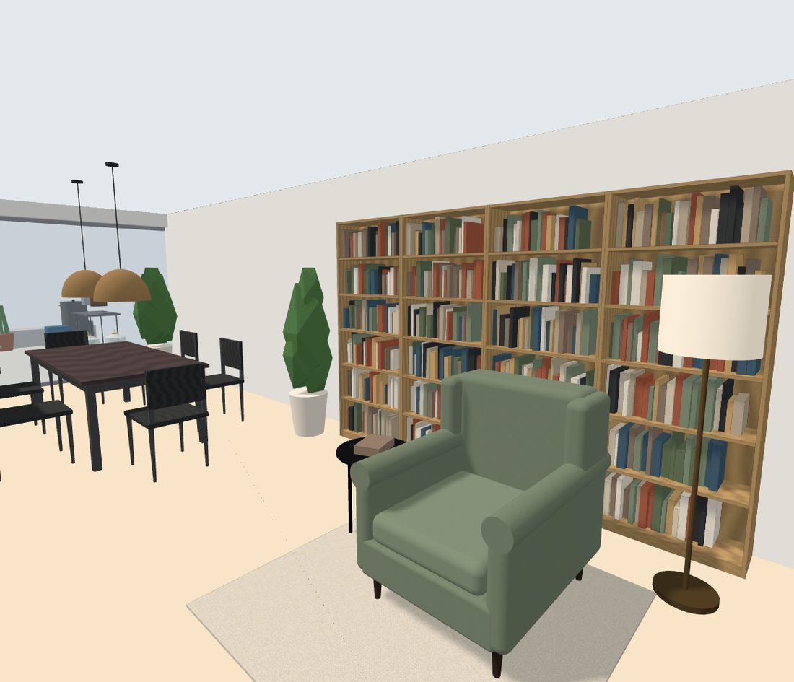<figcaption>Wohnen, middle</figcaption></figure><figure class="shot small">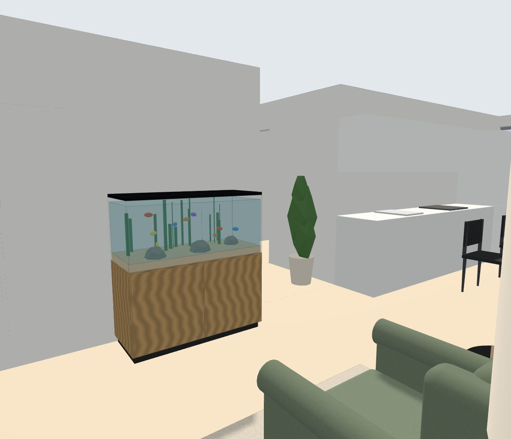</figure></div><div class="txt"><h3>Library &amp; aquarium</h3><p>The middle of the long living room becomes a reading room: four oak BILLY bookcases fill the south wall, the KALLAX divider is stocked with books on the library side, and a 120-litre aquarium on an oak cabinet faces them from the north wall. A sage STRANDMON wing chair sits between the two, under a linen floor lamp.</p><ul class="ideas"><li>Keep the lower BILLY shelves for oversized books and records</li><li>A clip-on picture light over the aquarium for evenings</li><li>Low-light plants in the tank: anubias, java fern, cryptocoryne</li><li>One shelf per BILLY left half-empty for objects and plants</li></ul><ul class="pieces"><li><span>Aquarium</span> <em>120 l on an oak cabinet</em> <code>120×50×130</code></li><li><span>Rug</span> <em>round, wool, 160 cm</em> <code>160×160×1</code></li><li><span>BILLY</span> <em>Bücherregal, Eichenfurnier</em> <code>80×28×202</code></li><li><span>BILLY</span> <em>Bücherregal, Eichenfurnier</em> <code>80×28×202</code></li><li><span>Books</span> <em>the current read</em> <code>22×16×5</code></li><li><span>STRANDMON</span> <em>Ohrensessel, Salbeigrün</em> <code>82×96×101</code></li><li><span>BILLY</span> <em>Bücherregal, Eichenfurnier</em> <code>80×28×202</code></li><li><span>Floor lamp</span> <em>linen shade, brass</em> <code>40×40×155</code></li><li><span>GLADOM</span> <em>Tablett-Tisch, rund</em> <code>45×45×53</code></li><li><span>BILLY</span> <em>Bücherregal, Eichenfurnier</em> <code>80×28×202</code></li><li><span>Plant</span> <em>fiddle-leaf fig</em> <code>45×45×150</code></li></ul></div></section>
<section class="zone" id="dining"><div class="pics"><figure class="shot">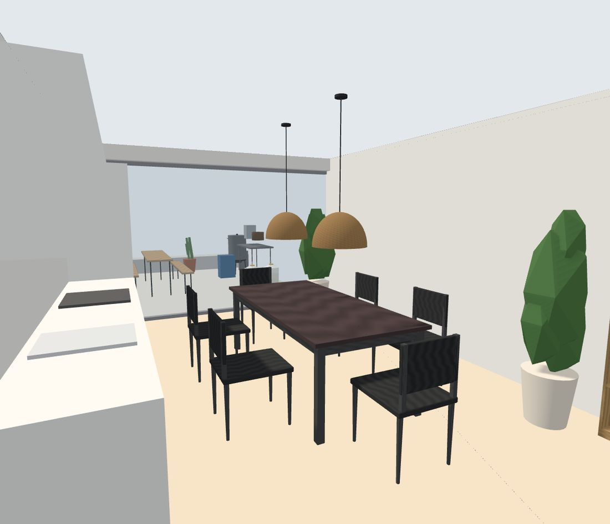<figcaption>Wohnen, garden end</figcaption></figure></div><div class="txt"><h3>Dining for six</h3><p>The MÖRBYLÅNGA table gets all six HAUGA chairs back round it, two rattan domes hang low over the table, and an olive tree stands by the glass to the garden.</p><ul class="ideas"><li>Linen runner in oat</li><li>Pendants at 90 cm under the ceiling, about 1.3 m above the top</li></ul><ul class="pieces"><li><span>Plant</span> <em>olive tree by the glass</em> <code>50×50×160</code></li><li><span>Pendant</span> <em>rattan dome</em> <code>45×45×28</code></li><li><span>HAUGA</span> <em>stuhl weiss</em> <code>46×53×86</code></li><li><span>HAUGA</span> <em>stuhl weiss</em> <code>46×53×86</code></li><li><span>HAUGA</span> <em>stuhl weiss</em> <code>46×53×86</code></li><li><span>Pendant</span> <em>rattan dome</em> <code>45×45×28</code></li><li><span>HAUGA</span> <em>stuhl weiss</em> <code>46×53×86</code></li><li><span>HAUGA</span> <em>stuhl weiss</em> <code>46×53×86</code></li><li><span>HAUGA</span> <em>stuhl weiss</em> <code>46×53×86</code></li></ul></div></section>
<section class="zone" id="lounge"><div class="pics"><figure class="shot">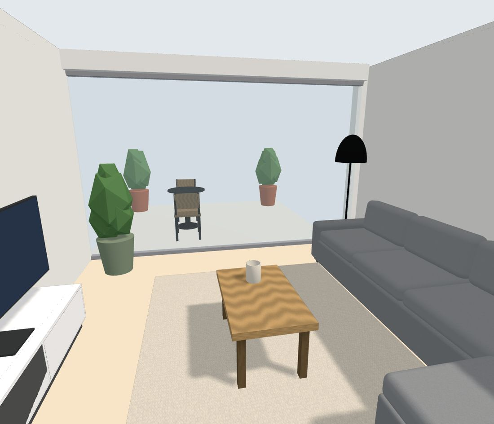<figcaption>Wohnen, terrace end</figcaption></figure><figure class="shot small">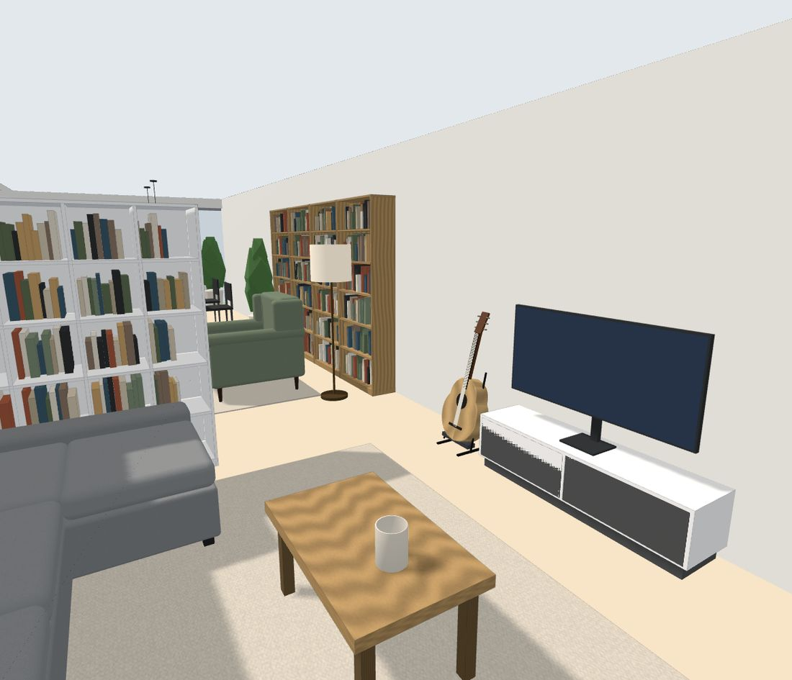</figure></div><div class="txt"><h3>Lounge &amp; music</h3><p>VIMLE stays where it is. The KALLAX TV bench turns its open side to the room, with a 55-inch screen on top, an oak LACK coffee table, a 2×3 m oat wool rug, a black arc lamp, a monstera by the glass to the terrace, and an acoustic guitar on its stand beside the TV bench, in reach of the sofa.</p><ul class="ideas"><li>Sage and oat cushions on VIMLE, one taupe velvet</li><li>Guitar on a stand, away from the radiator and the south sun</li><li>Wool throw over the chaise</li><li>Candles on the coffee table, not on the TV bench</li></ul><ul class="pieces"><li><span>Floor lamp</span> <em>arc, black</em> <code>40×40×160</code></li><li><span>Plant</span> <em>monstera</em> <code>50×50×120</code></li><li><span>Rug</span> <em>wool, oat, 200×300 cm</em> <code>300×200×1</code></li><li><span>LACK</span> <em>Couchtisch, Eiche</em> <code>90×55×45</code></li><li><span>Candles</span> <em>on the coffee table</em> <code>12×12×15</code></li><li><span>TV</span> <em>55 inch</em> <code>124×25×78</code></li><li><span>Guitar</span> <em>acoustic, on a stand</em> <code>40×35×105</code></li></ul></div></section>
<section class="zone" id="bedroom"><div class="pics"><figure class="shot">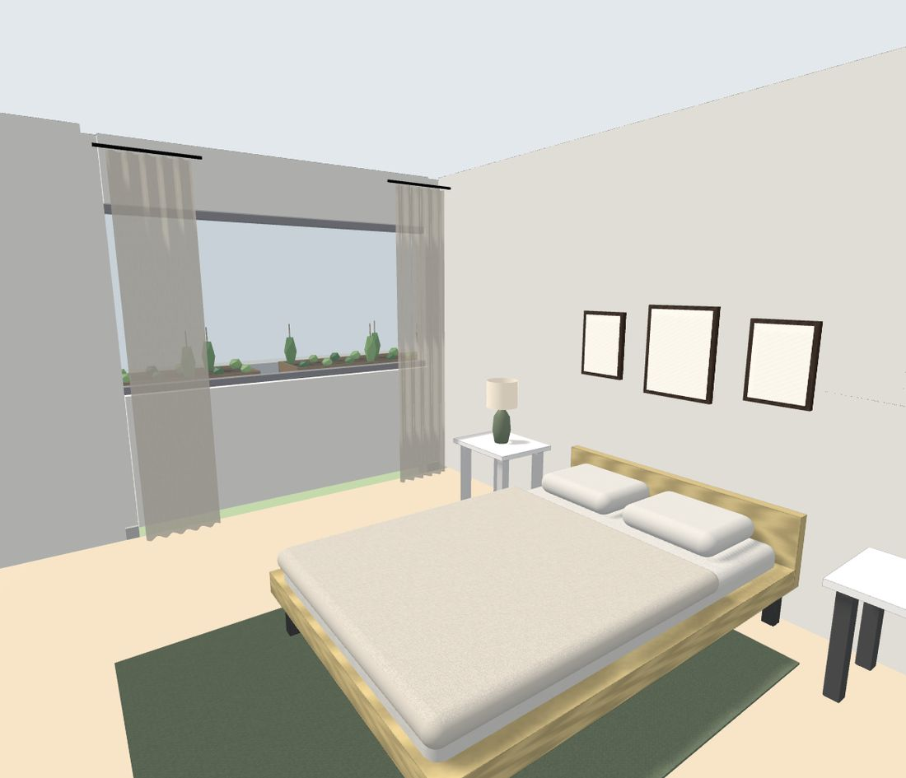<figcaption>Zimmer 1</figcaption></figure></div><div class="txt"><h3>Bedroom</h3><p>Your pine NEIDEN bed gets a second GLADOM bedside table and lamp, two white PAX wardrobes take the west wall, an oak HEMNES chest of drawers with a mirror sits by the door, a sage rug goes under the bed and linen curtains frame the window.</p><ul class="ideas"><li>Three botanical prints above the bed</li><li>Snake plant in the corner, it tolerates the low light</li><li>Warm 2700 K bulbs in both bedside lamps</li></ul><ul class="pieces"><li><span>Frame</span> <em>30×40 cm, botanical print</em> <code>30×3×40</code></li><li><span>Mirror</span> <em>oak frame</em> <code>60×3×80</code></li><li><span>Frame</span> <em>40×50 cm, botanical print</em> <code>40×3×50</code></li><li><span>Plant</span> <em>pothos</em> <code>18×18×30</code></li><li><span>PAX</span> <em>Kleiderschrank 100×58×201, weiss</em> <code>100×58×201</code></li><li><span>PAX</span> <em>Kleiderschrank 100×58×201, weiss</em> <code>100×58×201</code></li><li><span>Curtain</span> <em>linen, floor length</em> <code>45×10×240</code></li><li><span>HEMNES</span> <em>Kommode mit 8 Schubladen, Eiche</em> <code>160×50×95</code></li><li><span>Frame</span> <em>30×40 cm, botanical print</em> <code>30×3×40</code></li><li><span>Table lamp</span> <em>ceramic, linen shade</em> <code>22×22×45</code></li><li><span>Rug</span> <em>sage wool, 170×240 cm</em> <code>240×170×1</code></li><li><span>GLADOM</span> <em>Tablett-Tisch, schwarz</em> <code>45×55×50</code></li><li><span>Plant</span> <em>snake plant</em> <code>35×35×90</code></li><li><span>Curtain</span> <em>linen, floor length</em> <code>45×10×240</code></li></ul></div></section>
<section class="zone" id="zimmer2"><div class="pics"><figure class="shot">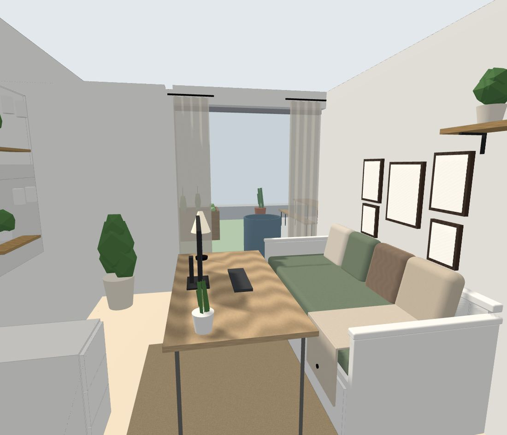<figcaption>Zimmer 2</figcaption></figure></div><div class="txt"><h3>Work &amp; guest room</h3><p>Kept as you set it up from the first moodboard: desk, SKÅDIS pegboards, HEMNES daybed, gallery wall and shelf. Only the keyboard went back onto the desk and one stray frame back onto the wall.</p></div></section>
<section class="zone" id="hall"><div class="pics"><figure class="shot">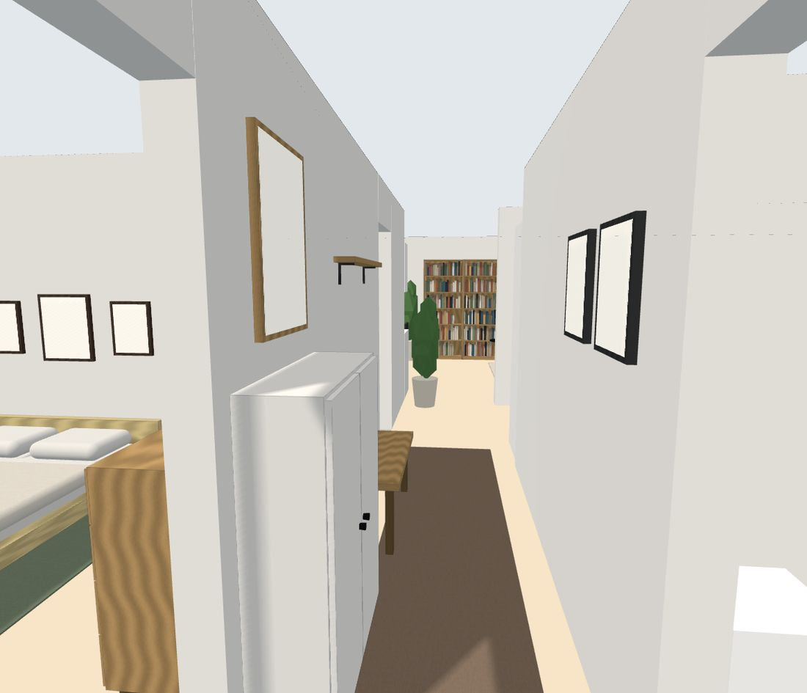<figcaption>Korridor</figcaption></figure></div><div class="txt"><h3>Arrival</h3><p>A white HEMNES shoe cabinet with an oak mirror above it, an oak bench under a coat rail, a taupe runner the length of the corridor, two travel prints and a kentia palm where the corridor opens into the living room.</p><ul class="ideas"><li>Hooks at 170 cm, bench at 46 cm</li><li>A tray on the shoe cabinet for keys</li></ul><ul class="pieces"><li><span>Coat rail</span> <em>oak with hooks</em> <code>100×12×3</code></li><li><span>Frame</span> <em>travel print</em> <code>35×3×45</code></li><li><span>Rug</span> <em>runner, 80×300 cm</em> <code>300×80×1</code></li><li><span>Bench</span> <em>oak, by the door</em> <code>100×35×46</code></li><li><span>Frame</span> <em>travel print</em> <code>35×3×45</code></li><li><span>Mirror</span> <em>round-cornered, oak</em> <code>50×3×70</code></li><li><span>HEMNES</span> <em>Schuhschrank, weiss</em> <code>89×30×127</code></li><li><span>Plant</span> <em>kentia palm</em> <code>40×40×130</code></li></ul></div></section>
<section class="zone" id="garden"><div class="pics"><figure class="shot">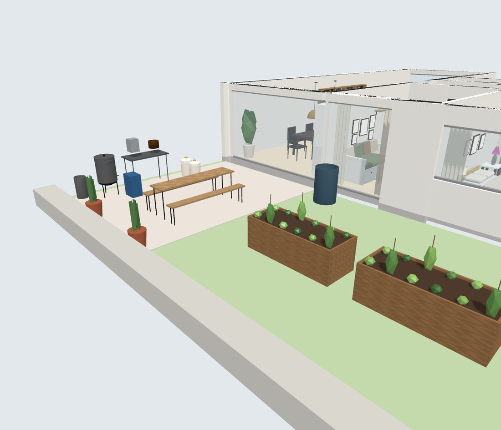<figcaption>Garden (east)</figcaption></figure><figure class="shot small">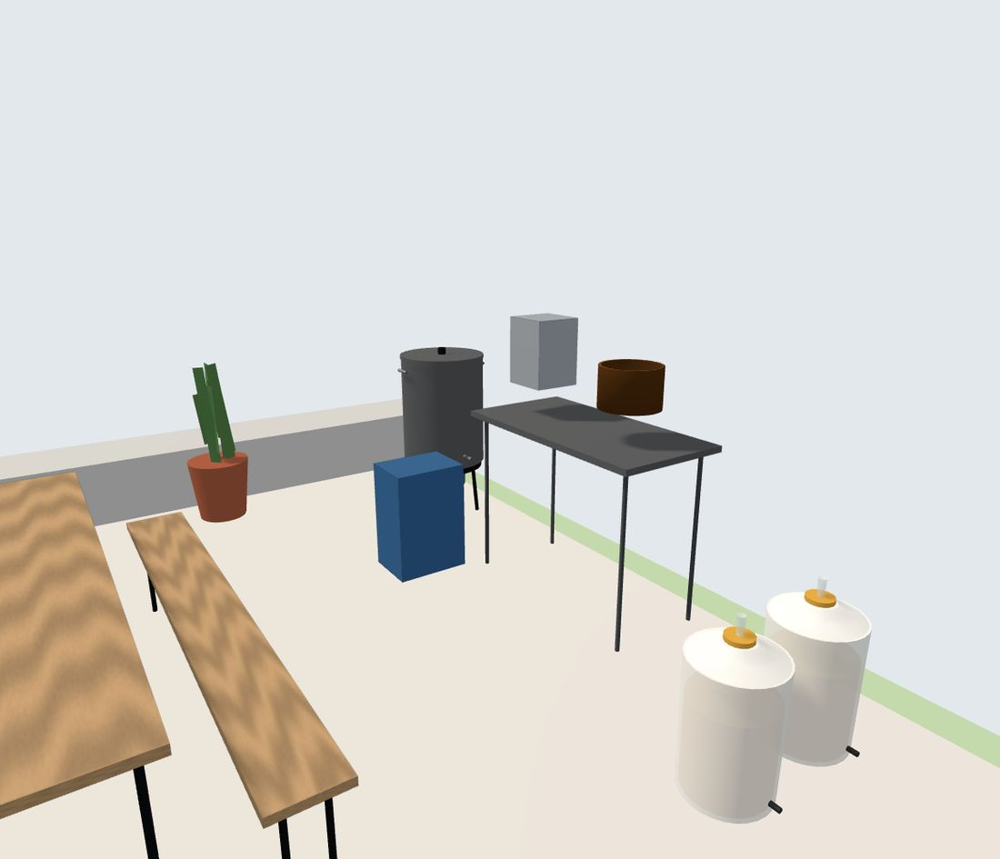</figure></div><div class="txt"><h3>Kitchen garden &amp; beer garden</h3><p>Two 200×80 cm larch raised beds on the lawn for vegetables and herbs, a dwarf apple tree and a 300-litre rain barrel by the house. On the paving, a classic beer-garden set (table and two benches) next to the brewing corner.</p><ul class="ideas"><li>Raised beds at 70 cm: no bending, and room for a cold frame lid</li><li>Hops climbing up the two tall pots by the kerb</li><li>Rain barrel feeds the beds and the brew-day clean-up</li></ul><ul class="pieces"><li><span>Rain barrel</span> <em>300 l</em> <code>60×60×95</code></li><li><span>Apple tree</span> <em>dwarf, in the lawn</em> <code>90×90×230</code></li><li><span>Beer bench</span> <em>220×25 cm</em> <code>220×25×47</code></li><li><span>Raised bed</span> <em>larch, 200×80×70 cm</em> <code>200×80×70</code></li><li><span>Beer bench</span> <em>220×25 cm</em> <code>220×25×47</code></li><li><span>Beer table</span> <em>220×50 cm, spruce</em> <code>220×50×77</code></li><li><span>Raised bed</span> <em>larch, 200×80×70 cm</em> <code>200×80×70</code></li></ul></div></section>
<section class="zone" id="brewing"><div class="pics"><figure class="shot"><figcaption>Garden, paving by the living room</figcaption></figure></div><div class="txt"><h3>Brewing corner</h3><p>Brewing happens outside on the paving: a 50-litre kettle on a gas burner, a stainless bench with the grain mill and copper wort chiller, two 30-litre fermenters, bottle crates and the propane bottle at the far edge. Malt, hops and bottles live on a metal shelf in the Reduit, a few steps away.</p><ul class="ideas"><li>Keep the burner 1 m from the house and the fermenters in the shade</li><li>Hose connection near the bench for the chiller</li><li>Fermenters move into the Reduit for steady temperatures</li></ul><ul class="pieces"><li><span>Brew kettle</span> <em>50 l on a gas burner</em> <code>55×55×110</code></li><li><span>Fermenter</span> <em>30 l, airlock</em> <code>35×35×60</code></li><li><span>Brewing bench</span> <em>stainless, 120×60 cm</em> <code>120×60×90</code></li><li><span>Herbs</span> <em>hops in a pot</em> <code>45×45×110</code></li><li><span>Wort chiller</span> <em>copper coil</em> <code>30×30×20</code></li><li><span>Gas bottle</span> <em>propane, 10.5 kg</em> <code>30×30×58</code></li><li><span>Fermenter</span> <em>30 l, airlock</em> <code>35×35×60</code></li><li><span>Grain mill</span> <em>on the bench</em> <code>25×25×35</code></li><li><span>Bottle crates</span> <em>two, stacked</em> <code>40×30×60</code></li><li><span>Herbs</span> <em>hops in a pot</em> <code>45×45×110</code></li></ul></div></section>
<section class="zone" id="terrace"><div class="pics"><figure class="shot">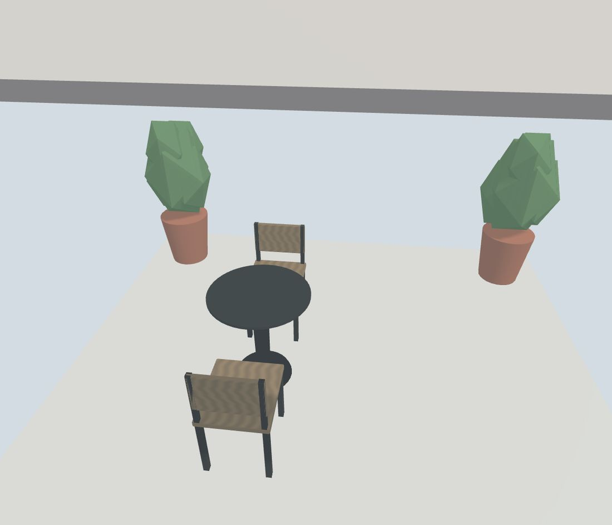<figcaption>Terrace (west)</figcaption></figure></div><div class="txt"><h3>Bistro terrace</h3><p>A round charcoal bistro table with two acacia folding chairs and two olive trees in terracotta: a morning-coffee spot off the lounge.</p><ul class="pieces"><li><span>Plant</span> <em>olive in terracotta</em> <code>55×55×140</code></li><li><span>Bistro table</span> <em>round, 70 cm</em> <code>70×70×74</code></li><li><span>Plant</span> <em>olive in terracotta</em> <code>55×55×140</code></li><li><span>Chair</span> <em>folding, acacia</em> <code>44×50×82</code></li><li><span>Chair</span> <em>folding, acacia</em> <code>44×50×82</code></li></ul></div></section>
  </div>

  <footer>
    <p>Applied to the shared 3D planner: <a href="https://claude.ai/artifact/AU4Q1joHJ5591a2iKdLMtk" target="_blank" rel="noopener">open the apartment model</a>.
      Under <em>Share &amp; save</em> you'll find <b>Apartment moodboard</b> (this board) and <b>Before the apartment moodboard</b> (the layout as it was).</p>
    <p>Sizes are in centimetres, width × depth × height. Renders come from the planner itself.</p>
  </footer>
</main>
